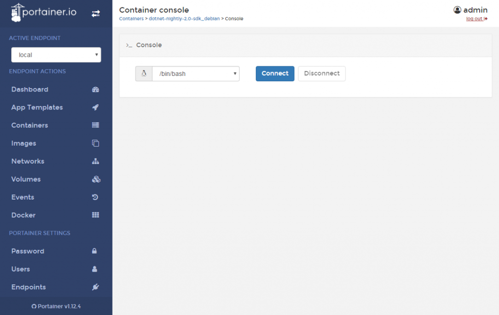
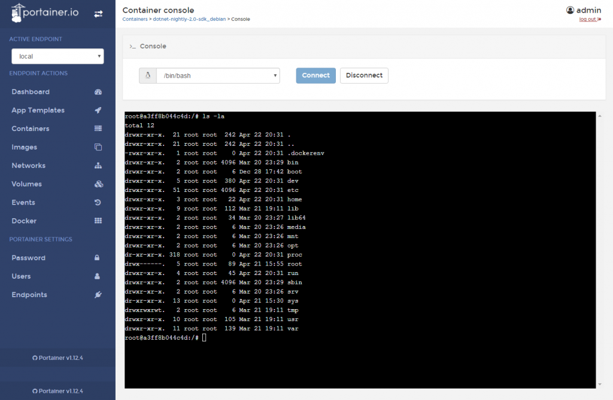
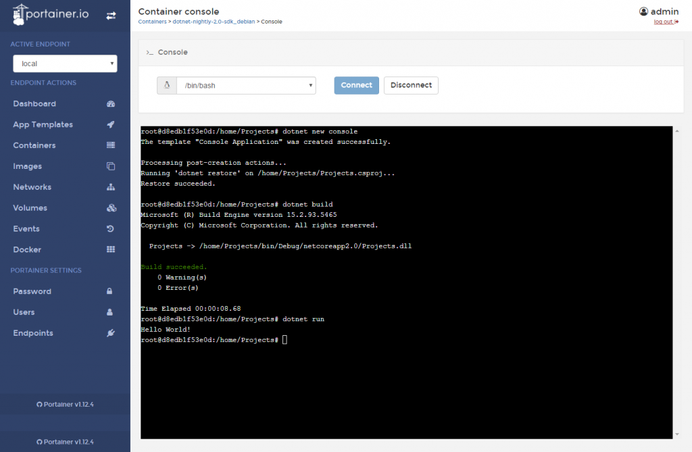

Introduction
.NET Core 2.0 PreviewとVisual Studio Codeでコンソールアプリをつくる Linux準備編にて、Portainerを経由し、Dockerで、
- debianベースの.NET Core 2.0 Preview SDKのImageをPull
- コンテナの作成
を実行しました。 今回は.NET Coreでソースのビルドと実行を行います。
コンソールに接続
Portainerで前回作成したコンテナの詳細画面に遷移します。 Container StatusにConsoleというリンクがあるのでクリックします。 そうすると、Container consoleという画面に遷移します。
 ここで、ペンギンアイコンのコンボボックスを開くと、**/bin/shと/bin/bashを選べます。 今回は/bin/bashを選んで、Connectをクリックすると、黒い背景のコンソールが出現します。 ここで、ls -laと入力してEnterキーを叩きます。 
きちんとコンテナ内につながっているようです。Portainer経由でコンテナに接続もできます。凄い。 次に、cd home/Projects**と叩きます。 コンテナ作成時にマッピングしたディレクトリです。きちんと移動したことがわかります。
{kind=link}
{kind=link}
dotnet
コンテナに繋がっていることがわかったので、.NET Coreが利用できることを確認し、ビルドと実行を行っていきます。 まず、dotnet –infoと入力します。 [code lang=”sh”] # dotnet –info .NET Command Line Tools (2.0.0-preview1-005825)
Product Information: Version: 2.0.0-preview1-005825 Commit SHA-1 hash: b4a821109d
Runtime Environment: OS Name: debian OS Version: 8 OS Platform: Linux RID: debian.8-x64 Base Path: /usr/share/dotnet/sdk/2.0.0-preview1-005825/
Microsoft .NET Core Shared Framework Host
Version : 2.0.0-preview1-002028-00 Build : 6d0caecf154d3398b9bc0e637089b6af9e250479 [/code] .NET Core 2.0 previewがインストールされている、debianであることが確認できました。 ここまでくれば、あとは前々回と同じく、**Hello, world!!**を表示するコンソールを作り、ビルド、実行します。 [code lang=”sh”] $ dotnet new console The template “Console Application” was created successfully.
Processing post-creation actions… Running ‘dotnet restore’ on /home/Projects/Projects.csproj… Restore succeeded.
$ dotnet build Microsoft (R) Build Engine version 15.2.93.5465 Copyright (C) Microsoft Corporation. All rights reserved.
Projects -> /home/Projects/bin/Debug/netcoreapp2.0/Projects.dll
Build succeeded. 0 Warning(s) 0 Error(s)
Time Elapsed 00:00:08.68 $ dotnet run Hello World! [/code]

実行できました。 Docker環境でも.NET Coreを動かせることを証明できました。
{kind=link}